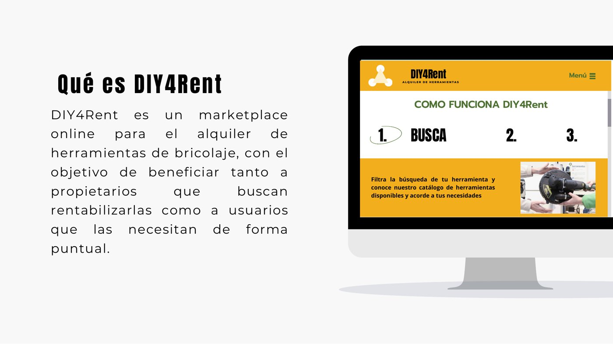
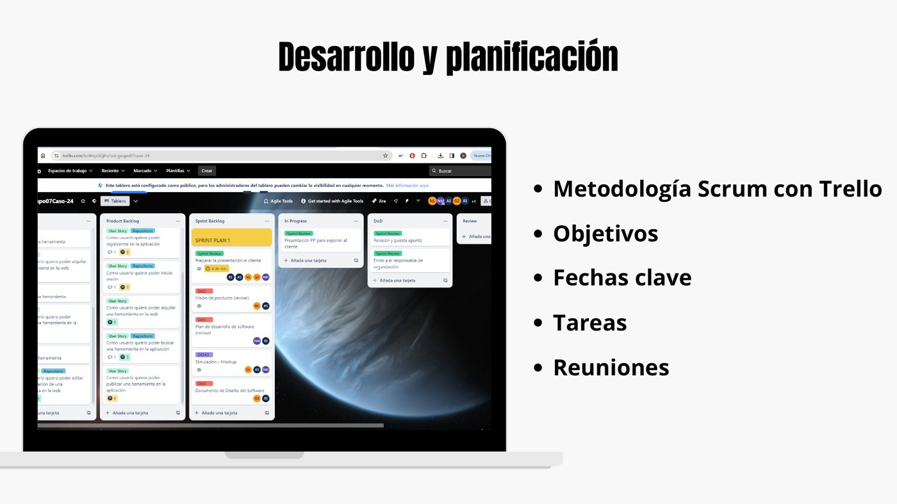
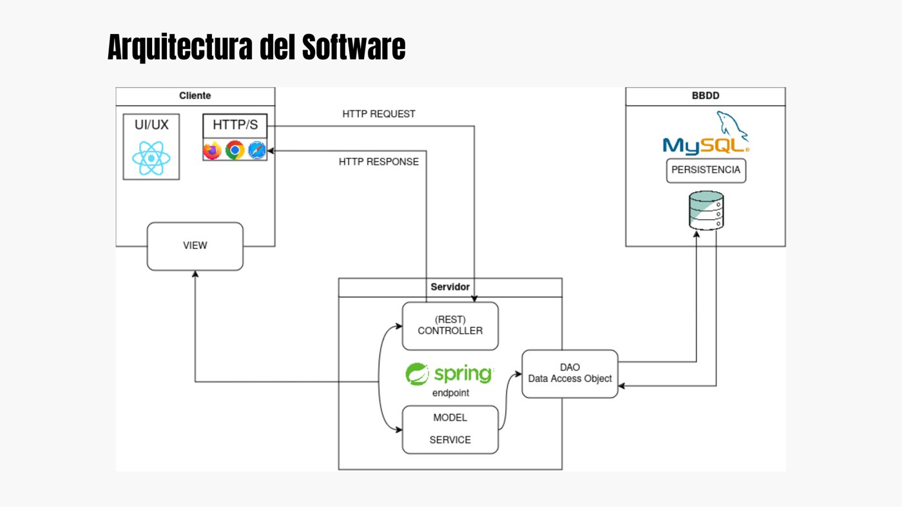

ISST · 2023–2024 · Proyecto en equipo
DIY4Rent: marketplace full-stack para alquiler de herramientas
Proyecto de Ingeniería de Sistemas y Servicios Telemáticos desarrollado con metodología Scrum. La solución permite publicar, buscar y reservar herramientas, gestionar cuentas y operar sobre un backend REST protegido mediante autenticación.
Se publica el proyecto final y su diseño software, no las prácticas preparatorias. El ZIP de código incluido está saneado: se han eliminado artefactos compilados, bases de datos locales, historial de Git y una clave de Google Maps presente en la entrega original, sustituyéndola por un archivo de ejemplo.
Producto
Un servicio completo de alquiler entre usuarios.
Arquitectura
Frontend, backend y persistencia.
Requisitos
Documento de visión, casos de uso, reglas de dominio, alcance y diseño de arquitectura.
Backend
Java 21, Spring Boot, Spring Security, JPA, DTOs, servicios, repositorios y controladores REST.
Frontend
React con routing, Axios, componentes de interfaz y flujos para cuenta, herramientas y reservas.
Integración
Autenticación JWT, subida de imágenes, persistencia H2 en la entrega y servicios de mapas.
Evidencias
Del concepto a la arquitectura.



Stack
Tecnologías empleadas
Entregables seleccionados